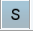
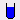
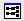

dpa
NAME
dpa - Display the acquisition status parameters
DESCRIPTION
The command dpa displays the acquisition status parameters (see the next figure).
These are set by acquisition commands and represent the status of the raw data. Entering dpa on the command line is equivalent to clicking the AcquPars tab and then clicking the button.
The following buttons are available:
Undo the last modification (unused for status parameters).
Show pulse program parameters .
 Switch to acquisition parameters.
 Set probe/solvent dependent parameters.
 Open and set the nuclei and routing.
Show the status of the nuclei and routing information (edasp-s).
Collapse all submenus.
Read shim values from current dataset (rsh shimvalues).
Search for the parameter specified in the search field.
Acquisition status parameters can also be viewed by entering their names on the command line. For example:
- s ns
- Displays the acquisition status parameter NS.
- s td
- Displays the acquisition status parameter TD.
On multidimensional data, the parameter values for each direction are shown.
INPUT FILES
- <dir>/data/<user>/<name>/nmr/<expno>/
- acqus - acquisition status parameters
On 2D and 3D data the files acqu2s and acqu3s are used for the indirect directions, respectively (see also chapter Parameter Files).